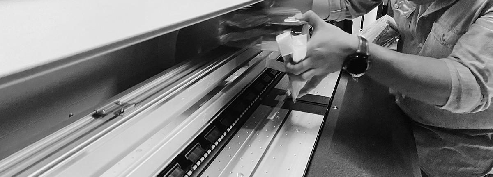

Somos una empresa dedicada al servicio técnico especializado en equipos de impresión digital de gran formato en México: UV, solvente, eco-solvente y sublimación. Sin importar el tamaño de su negocio, nuestra misión es ser su ventanilla única para todas las necesidades de servicio técnico in situ o remotas.

Servicio integral y de confianza.
Sabemos que el principal objetivo de la industria es mantener los niveles de productividad disminuyendo los tiempos de inactividad de los equipos. Para tal efecto, nuestro personal de Ingenieros de Servicio Técnico, especializados en equipos de impresión digital, está capacitado para brindar un servicio de calidad enfocado en resultados que además cuenta con más de 15 años de experiencia.
Cobertura a todo México
Brindamos servicio técnico a las principales marcas y equipos de impresión digital: Mimaki, Roland, Handtop, Mutoh, Vutek, Rastek, Fujifilm, Imprimo, Anapurna, Britomatics, Xulli, Allwin, Leopard, Challenger, Flora, Locor, entre otras.
SERVICIOS:
Acondicionamiento e instalación de áreas para equipos de impresión digital.
Le asesoramos en los preparativos para adecuar su área de trabajo para la instalación de equipos nuevos y usados. La asesoría que brindamos durante la pre-instalación incluye la información de los requerimientos eléctricos, neumáticos, de humedad y temperatura, necesarios para la correcta operación del equipo impresor; además de proporcionar las dimensiones de los equipos, la ubicación de los accesos de los servicios en la máquina y las recomendaciones para un flujo de trabajo eficiente en el área.Nos especializamos en varios segmentos: sublimación, impresión UV e impresión solvente y eco-solvente.
Capacitación.
Brindamos capacitación para operar equipos de impresión digital, ya sea para mantenerse al día con las nuevas tecnologías o para establecer su negocio en un nuevo segmento de la industria de gran formato.En cada capacitación nos enfocamos en conocer las necesidades específicas de su equipo de trabajo para diseñar contenido especializado y a la medida de sus objetivos.
Pólizas de extensión de garantía.
Proteja su inversión con una garantía confiable.
Si está buscando un plan de servicio flexible e integral para su equipo de impresión digital, Intrat ofrece una variedad de opciones de cobertura para satisfacer sus necesidades comerciales específicas.Nuestras pólizas de servicio ofrecen cobertura en refacciones y mantenimientos correctivos, así como mantenimientos preventivos y capacitaciones calendarizadas.
Contamos con varios tipos de planes anuales que sin importar el tamaño de su negocio o empresa, le brindarán el respaldo técnico que necesita para mantener sus equipos de impresión digital en óptimo estado de producción.
Servicio técnico por evento.
¿Requiere atención por única ocasión o tiene una emergencia?
Podemos resolver sus problemas técnicos urgentes, independientemente del tamaño y la gravedad del problema. Nuestra misión es solucionar de manera práctica y enfocados en resultados, cualquiera que sea su problema técnico; no dude en contactarnos.
Venta, importación y reemplazo de refacciones.
Contamos con gran variedad de repuestos y consumibles nuevos para las principales marcas de equipos de impresión digital. Gestionamos la importación de sus piezas y repuestos y le brindamos la asesoría técnica necesaria para hacer compras de valor, adecuadas a su equipo, con base en los objetivos de su empresa o negocio. Si ya cuenta con su reemplazo o refacción, le brindamos nuestro servicio de instalación realizado por nuestro equipo de técnicos especializados.
Ajustes de calidad y Perfilación de color.
Ajustamos y calibramos su equipo por medio de perfiles para que imprima los colores y gamas correctas y acorde a sus necesidades.
Finalmente nuestro trabajo más importante:
¡Se trata de Servicio al Cliente!
Nuestra mision es clara.
Estamos aquí para usted cuando su impresora y su negocio requieran atención; y con la finalidad de mantenerlos en su estado óptimo de producción.Trabajamos en estrecha colaboración con su equipo para garantizar que su impresora esté siempre en la mejor forma técnica; para que pueda producir impresiones de la mejor calidad posible.